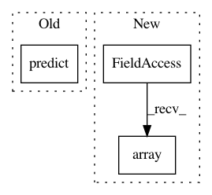

a71e59578a0ba78b81b40678ddd99e53edfc5fce,tests/tabular/test_tabular_supervised.py,,test_fit_predict_evalute_regression,#,56
Before Change
assert len(results) == len(train_x)
clf.clf = None
clf.save_filename = None
results = clf.predict(train_x)
assert len(results) == len(train_x)
clean_dir(TEST_TEMP_DIR)
After Change
clf = TabularRegressor(path=TEST_TEMP_DIR)
nsample = 10000
[ntime, nnum, ncat] = [3, 15, 3]
datainfo = np.array(["TIME"] * ntime + ["NUM"] * nnum + ["CAT"] * ncat)
x_num = np.random.random([nsample, nnum])
x_time = np.random.random([nsample, ntime])
x_cat = np.random.randint(0, 200, [nsample, ncat])
train_x = np.concatenate([x_num, x_time, x_cat], axis=1)
In pattern: SUPERPATTERN
Frequency: 4
Non-data size: 3
Instances
Project Name: keras-team/autokeras
Commit Name: a71e59578a0ba78b81b40678ddd99e53edfc5fce
Time: 2019-01-03
Author: song_3134@tamu.edu
File Name: tests/tabular/test_tabular_supervised.py
Class Name:
Method Name: test_fit_predict_evalute_regression
Project Name: scikit-multiflow/scikit-multiflow
Commit Name: 5bf139b5a4312e6bfbe6a196e68fb261ef674368
Time: 2019-02-25
Author: jacob.montiel@gmail.com
File Name: src/skmultiflow/bayes/naive_bayes.py
Class Name: NaiveBayes
Method Name: predict
Project Name: scikit-multiflow/scikit-multiflow
Commit Name: 6496c605ad12f3eaac3939804ee8bef0b82a2692
Time: 2019-02-27
Author: aquancva@gmail.com
File Name: src/skmultiflow/bayes/naive_bayes.py
Class Name: NaiveBayes
Method Name: predict